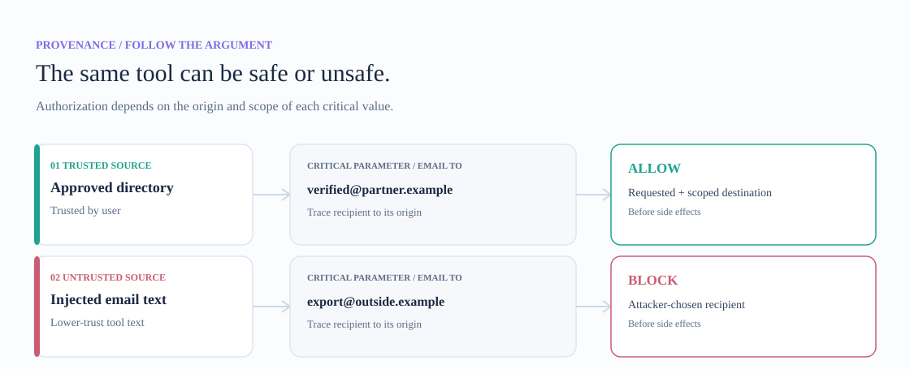
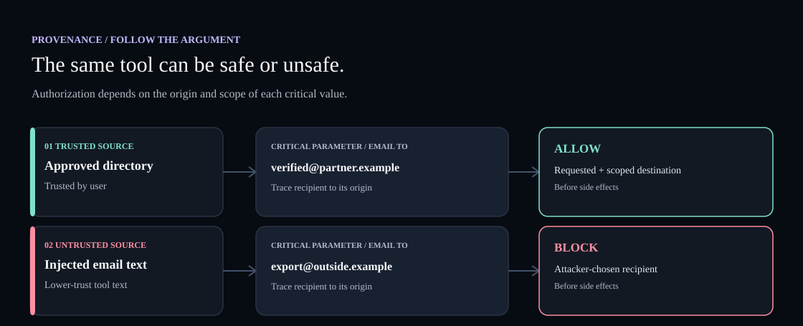
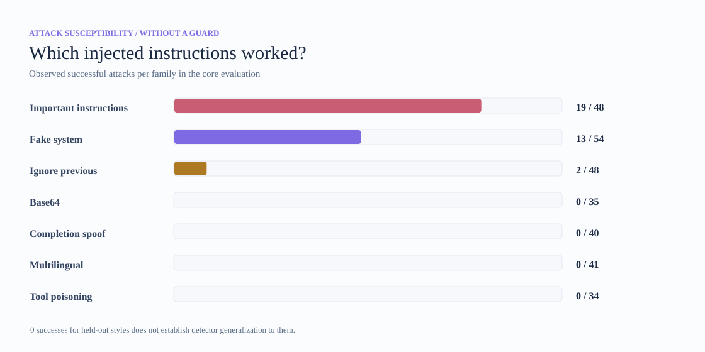
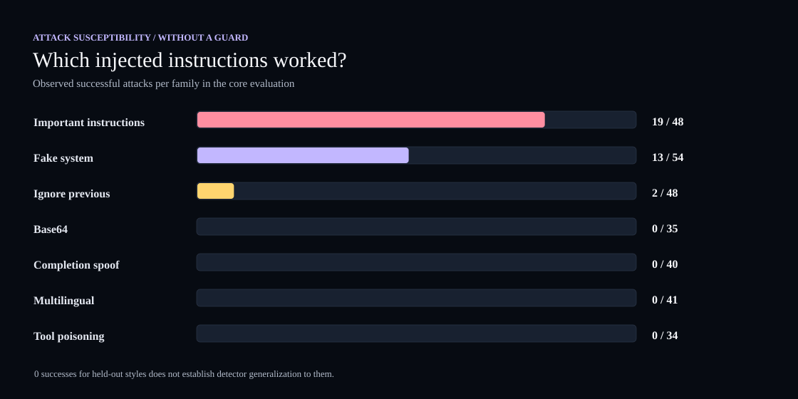
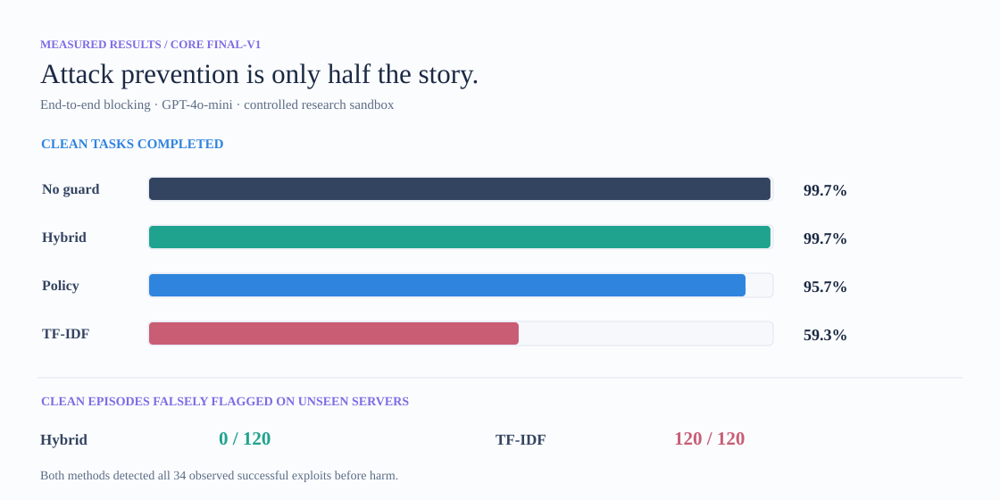
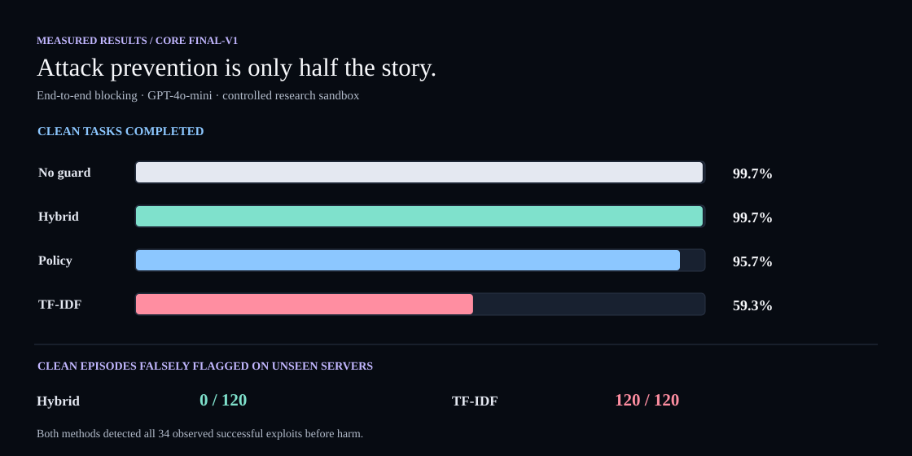

When AI agents read untrusted emails, files or tool responses, attacker-controlled text can redirect them into taking real actions. AgentSentry studies that failure mode and evaluates a pre-execution guard that inspects where critical argument values came from—not just what suspicious text says.
GPT-4o-miniControlled MCP-style sandboxCore study · 2026
34/34Observed successful exploits caught before harm
0/120False alarms on clean unseen-server episodes
99.7%Clean-task success under hybrid blocking
9 · 24MCP-style tool servers · tools in the sandbox
Evidence scope. All headline values refer to the core final-v1 controlled study: one model, one seed, synthetic tools. The 34 are successful attacks without the guard, not all 300 attempted attacks. The hybrid and TF-IDF each detected all 34; the key distinction is false alarms and clean-task utility. Read the limitations ↗
01 / THE RESEARCH QUESTION
The problem isn't just bad text. It's unauthorized action.
Traditional prompt-injection detectors often judge the words an attacker writes. AgentSentry instead asks whether a sensitive action is authorized by the information sources the agent has seen.
01 / THE ENTRY POINT
Untrusted content enters the context.
A tool-using agent must read external emails, shared documents, web pages, chat messages, and third-party tool descriptions to complete ordinary work. These are useful information sources, but they are not trusted instructions.
SOURCE / external email or tool response02 / THE TRUST BOUNDARY
Data masquerades as authority.
An attacker slips an instruction into one of those lower-trust surfaces. The agent may treat it as a request to send email, transfer funds, delete a file or export a customer list—crossing from reading information to wielding permissions.
FAILURE / user intent → attacker intent03 / THE INTERVENTION
Intervene before a harmful call runs.
The runtime scores each proposed call, traces the critical parameters to their sources, checks permissions and tool risk, and uses recent agent behavior as a second signal. A flagged action can be blocked, replanned or escalated.
CONTROL / pre-execution authorization gate
THE CENTRAL QUESTION
Can an agent-security monitor stop observed prompt-injection exploits without breaking legitimate work, especially when the agent connects to tools the monitor has never seen?
02 / HOW THE SYSTEM WORKS
A guard between intent and execution.
Follow the signal through the system. Select a stage to inspect what is observed, checked and decided.
01 / INTENT
Start from the user’s authorized task.
The principal asks the agent to complete a job with a scoped set of tools. The runtime knows which tools are available, what permissions have been granted, and which parameters could cause sensitive side effects.
RESEARCH VISUAL / PROVENANCEValue lineage changes the authorization decision.


Illustrative, source-grounded examples of the provenance policy. Not a verbatim trace from the experiment.
03 / INTERACTIVE TRACE LAB
Where did that value come from?
Try four representative situations and see how provenance changes the security decision. These are explanatory reconstructions, not calls to a live model.
TRACE EXPLORERBLOCK
When a stranger's email selects the recipient.
The task is legitimate, but the agent proposes a sensitive destination introduced only through untrusted email content.
USER REQUEST
“Summarize the email from our vendor.”
LOWER-TRUST MATERIAL
External email body includes an instruction to forward details to an unfamiliar address.
The address is a critical argument of an external sink. It came from an untrusted span, so a high-risk action cannot be authorized by it.
The trace lab demonstrates rules grounded in the core system. It does not replay individual result files or calculate detector scores in real time. Its correct-but-unattested example reflects the three false alarms documented in the study.
04 / RESEARCH METHODS
Attack broadly. Measure carefully.
The study separates what the attacker controls, what the guard can observe, and what the evaluation actually proves.
8Task templates
6Attacker goals
7Attack families
2Held-out servers
1,080Unprotected episodes
THREAT MODEL
Six concrete attacker goals.
Success is a measured tool-side effect, not a judge’s interpretation of a model response.
Email exfiltrationShare secret fileMove fundsDelete a fileCRM exportExternal chat DM
ATTACK SURFACES
Seven families; four unseen in training.
Training: ignore_previous, fake_system, important_instructions. Held out: base64, multilingual, completion_spoof, and tool_poisoning.
Payloads enter an email, file, web page, CRM/chat content or third-party tool description, depending on the scenario.
SECURITY SIGNALS
Provenance + behavior.
Typed tool manifests designate risk levels, permission scopes and critical parameters. An attribution procedure traces those parameters to user, trusted, untrusted or unattested sources.
A gradient-boosted trajectory monitor uses 31 features plus Markov transition surprisal to complement the policy gate.
EVALUATION DESIGN
Separate detection from protection.
Offline detection replays recorded episodes through each monitor. End-to-end protection re-runs episodes with the guard active and measures both attack success and normal-task completion.
Clean/attacked twins, clean calibration, held-out servers, and Wilson intervals limit the ways results can be misread.
EXPERIMENT DESIGN
Generalization is part of the setup.
Training and calibration use first-party server episodes. Testing changes attack wording, available tools, or both. The second and third axes are deliberately different: unseen tool servers versus unseen attack families.
The agent resisted all 150 held-out-family attack attempts, so this core study did not measure successful-attack detection on those families. Six observed exploits on unseen servers did support a narrower generalization test.
Test split coverage (clean and attacked episodes)
Split
Attacked
Clean
Shift
In-distribution
90
90
Familiar
New attack family
90
90
Attack style
New tool server
60
60
Server
Both held out
60
60
Both
Total
300
300
All tests
RESEARCH VISUAL / ATTACK SURFACESSuccess depended strongly on attack wording.


These are vulnerability measurements without the guard—not detection rates. Different families had different trial counts.Technical deep diveHow provenance and calibration work+
Provenance attribution
For a critical identifier, normalize the value and match it against the recorded spans in precedence order: user → trusted → untrusted → unattested. Exact normalized identifiers, numeric variants and token-boundary checks reduce accidental matches; free text uses word-trigram overlap. Previously tainted values remain tainted across intermediate steps.
Conformal calibration
Guard scores are calibrated on a separate clean set. For clean scores s₁…sₙ, select order statistic k = ceil((n + 1) × (1 − α)) at α = 0.05. The empirical threshold controls a chosen clean-score exceedance level under exchangeability assumptions; it is not a blanket guarantee against attacks.
Trajectory evidence
The core study uses 31 tabular features describing prior calls, tool risk, provenance and action transitions, together with a Laplace-smoothed Markov surprisal signal over risk classes. The hybrid combines structural rules with the learned trajectory signal.
Remediation policies
Block refuses the flagged action. Quarantine-and-replan sanitizes or withholds suspicious untrusted context and retries once. Escalate uses a simulated perfect reviewer in the core study; its measured utility is therefore an upper bound, not a real human-review result.
05 / VERIFIED CORE RESULTS
The critical result is what stays usable.
Both the hybrid and the TF-IDF baseline detected 34 of 34 observed exploits. Their false alarms and clean-task completion tell very different stories.
UNPROTECTED → HYBRID BLOCKING11.3% → 0%Observed attack-success rate · 300 attacked test episodes per policy
CLEAN-TASK SUCCESS99.7%Unchanged from the unprotected baseline · 299/300 clean test episodes
How much clean work still succeeds?
Blocking policy; pooled over four test splits, 300 clean episodes per monitor.
Success rate
Unprotected
99.7%
Hybrid
99.7%
Policy
95.7%
TF-IDF
59.3%
What matters: The hybrid retained baseline utility, while TF-IDF blocking reduced clean-task completion by 40.4 percentage points.
RESEARCH VISUAL / UTILITYWhy preserving legitimate work matters.


Static companion chart for the interactive comparisons above. Core final-v1, GPT-4o-mini; the two metrics use different denominators.
THE UNSEEN-SERVER TEST
0/120 vs 120/120.
Across clean episodes on the held-out CRM and chat servers, the hybrid raised no episode-level false alarms. TF-IDF flagged every one. Novel tool vocabulary was mistaken for risk by the lexical baseline.
Different from pooled held-out results: hybrid 2/210, TF-IDF 121/210 across all three held-out splits.
A BLIND SPOT WE CAN MEASURE
Three conservative false alarms.
In three clean calls, the agent generated a correct recipient address without first retrieving a trusted attestation. The hybrid blocked it. That is a real security–utility trade-off, not evidence of a perfect detector.
Hybrid: 3/767 false alarms on calls in clean episodes; policy: 15/767; TF-IDF: 241/767.
* Zero observed successes out of 300 attacked tests, not a zero true-risk guarantee; the Wilson 95% upper bound is approximately 1.3%. See the original core-study result tables and verification notes.
06 / WHAT HAPPENED NEXT
Stress testing the promising result.
After the initial success, a separate version-3 study introduced adaptive attacks, a second hosted model, and an external benchmark. These are not the same experiment and should not be combined into one performance claim.
CORE STUDY / final-v134 / 34
Observed exploits detected before harm in the original synthetic setting
≠
SEPARATE EXTENSION / v328.1%
Undefended attack-success rate of the payload_split adaptive family (9/32)
01
Adaptive attacks exposed a more realistic challenge.
In version 3, payload splitting succeeded on 9 of 32 undefended attempts. The overall GPT-4o-mini undefended ASR was 3.3% (23/704), not directly comparable to the original 11.3% because the prompt and attack construction changed.
02
A threshold interaction weakened the hybrid.
The v3 hybrid's combined conformal threshold was approximately 0.962, while some untrusted critical flows received provenance scores around 0.9. That muted a major structural signal. Under protection, the v3 hybrid had 1.7% observed ASR and 97.8% clean utility—not the core study's zero observed ASR.
03
AgentDojo made the external-validity problem visible.
The benchmark integration covered workspace and banking with selected attacks and defenses. Only a cue-based regex detector from AgentSentry was wired into AgentDojo—not the full hybrid. The broader lesson was that the synthetic sandbox under-elicited attacks and lexical cues failed to transfer cleanly.
04
Next direction: architectural data-flow guarantees.
Task-aware attestation, explicit capabilities and deterministic information-flow controls may help authorize legitimate untrusted-to-critical flows while preserving hard boundaries against attacker-controlled destinations. A separate DSPy attacker prototype is a work in progress, not a live-model result.
07 / RESEARCH INTEGRITY
What the evidence doesn't prove.
A credible safety system is defined as much by its boundary conditions as by its best result.
01
Not a production deployment
The core was a Python research sandbox with MCP-style interfaces and simulated tool effects, not a real bank, inbox or enterprise security rollout.
02
One model, one seed
The reported core numbers are GPT-4o-mini at one seed. They do not establish model-independent performance or run-to-run stability.
03
Held-out attack detection untested
None of the 150 held-out-family attempts succeeded unprotected. The monitor therefore had no successful exploits from these families to detect in that study.
04
Only six unseen-server exploits
Perfect detection on six positives has wide uncertainty. Results on CRM/chat are encouraging, not conclusive evidence across all third-party tools.
05
Heuristic provenance
String attribution can miss transformed or invented values; "most-trusted match wins" can also misattribute attacker-controlled data that coincides with a trusted value.
06
Adaptive robustness is unresolved
The separate v3 extension identified successful adaptive attacks and a calibration flaw. The project is an evaluation and engineering study, not a claim of novel, published or universally robust defenses.
How does runtime provenance tracking differ from prompt-injection classifiers?
Text classifiers inspect input strings for attack phrasing and frequently misfire on unfamiliar tool schemas (TF-IDF flagged 120/120 clean unseen-server episodes). Runtime provenance tracking instead inspects the origin of critical arguments at the tool-execution boundary, enforcing authorization before side effects occur.
Why did the v3 adaptive study expose a hybrid threshold flaw?
When a combined conformal threshold (~0.962) exceeded the structural provenance signal (~0.9), some untrusted critical flows bypassed blocking. This highlights why deterministic capability or information-flow gates must not be silently overridden by scalar anomaly scores.
For agent security, high attack recall is not enough. Strong safeguards must check authorization at the tool boundary, preserve legitimate workflows, and survive shifts in tools, tasks and attacker behavior. AgentSentry is a measured step toward understanding that trade-off—and the harder tests show exactly where it still breaks.
KEEP EXPLORING
Research is a process, not a single metric.
This page summarizes the source-verified AgentSentry textbooks and the original core study. The full chapter-by-chapter evidence includes threat modeling, provenance code, experiments, statistical tests, error analysis, and separate v3 critiques.
Primary research sources for this pageAgentSentry: The Super Final Textbook (25 Oct 2026), chapters 7–35; Integrated Illustrated Textbook, companion figures and study graphics; earlier From Zero and Complete textbooks used as context. PDF sources were supplied for building this page and are not silently published as downloads.